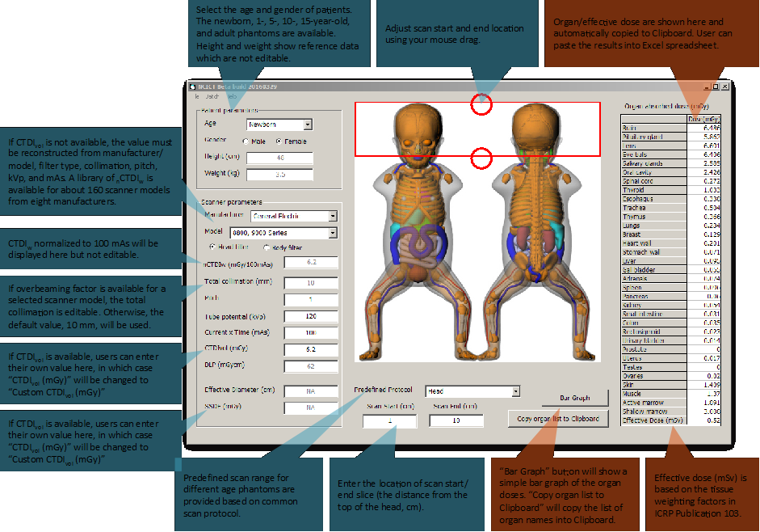

a. How to use Graphical User Interface
b. How to use Batch Mode
Batch – without CTDIvol
Column 1-study ID: 10001
Column 2-scan start: 1 cm from the top of the head
Column 4-make (see CTDI library): GE
Column 5-model (see CTDI library): GE HiSpeed FX/i, LX/i
Column 6-age: 15 year-old
Column 7-gender (1-female, 2-male): Male
Column 8-kvp: 120 kVp
Column 9-mAs: 125 mAs
Column 10-pitch: 1
Column 11 (optional)-head filter
Batch – with CTDIvol
1-studyid 2-scan start 3-scan end 4-CTDIvol 5-age 6-gender (1=F/2=M) 7-kvp 8-1=16 cm / 2=32 cm